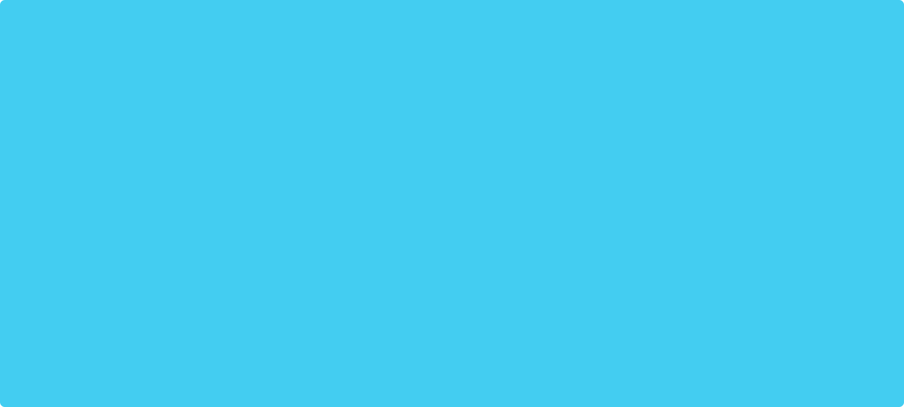

Forge's landing page creation brought forth unique challenges for NutsDev. The primary objective.
UX Case Study
Brand Identity
UI Design
Challenge
Forge's landing page creation brought forth unique challenges for NutsDev. The primary objective was to design a compelling online presence, succinct yet impactful, that truly embodies Forge's commitment to seamless digital marketing experiences, comprehensive resources, and industry expertise.
Solution
Forge's landing page creation brought forth unique challenges for NutsDev. The primary objective was to design a compelling online presence, succinct yet impactful, that truly embodies Forge's commitment to seamless digital marketing experiences, comprehensive resources, and industry expertise.
Brand Identity
The typography chosen for Zeelander embodies a refined elegance — we chose a serif typeface with unique curves that reflect the yacht’s design. This was combined with a timeless palette of warm white, deep brown, and soft ecru tones paired with a Dutch orange and deep green accents.

The typography chosen for Zeelander embodies a refined elegance — we chose a serif typeface with unique curves that reflect the yacht’s design. This was combined with a timeless palette of warm white, deep brown, and soft ecru tones paired with a Dutch orange and deep green accents.